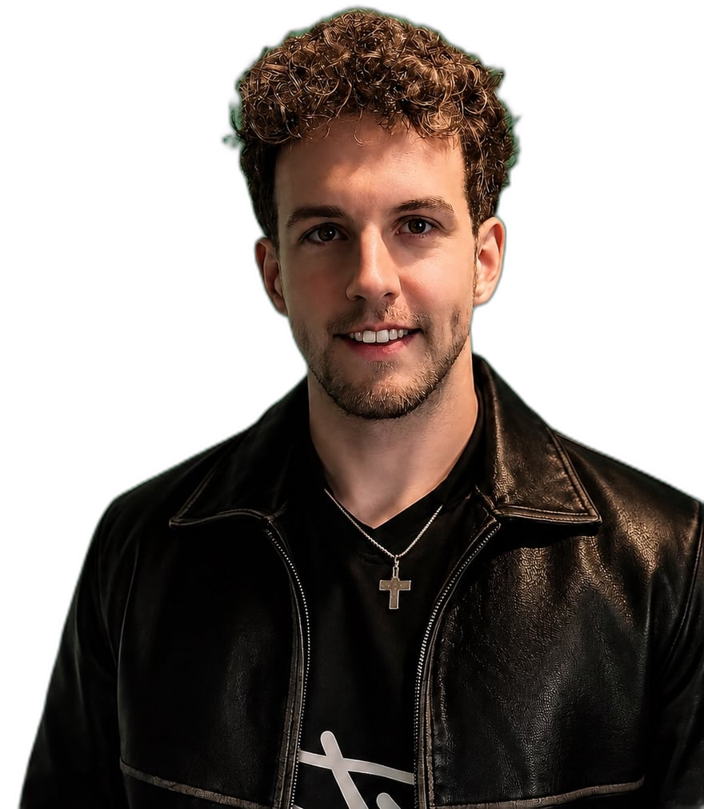

Ich war jemand der hundertmal angefangen und nie durchgezogen hat. Heute lebe ich anders. Durch Disziplin. Durch Glauben. Durch bewusste Entscheidungen. Und ich helfe dir, das auch zu tun.
Sebi DNA · Was mich antreibt
Vier Werte, ein Leben.

Etappe 01 / 04
01 / Faith
Bibel-grounded. Wörtlich.
Das Fundament, bevor irgendwas anderes kommt: Schlachter 2000, jeden Morgen — bevor das Handy angeht. Sprüche 24,16 ist der Anker: hinfallen gehört dazu, liegen bleiben nicht.
Scroll · Der Berg dreht sich
Sprüche 24,16 · Schlachter 2000
„Denn siebenmal fällt der Gerechte und steht wieder auf."
Mein Anker.
Wie es weitergeht
Bleib dabei — oder lass uns zusammenarbeiten.
Brand oder Partner? → Anfrage stellen